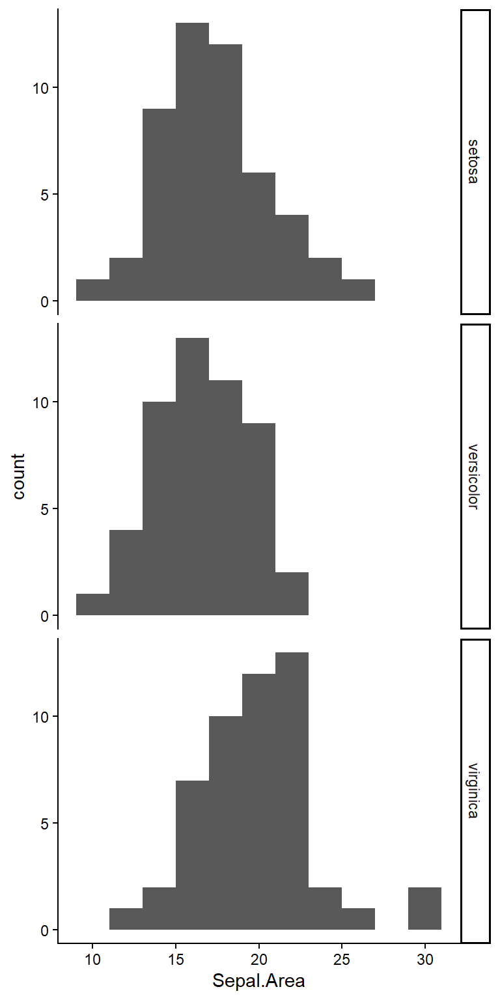
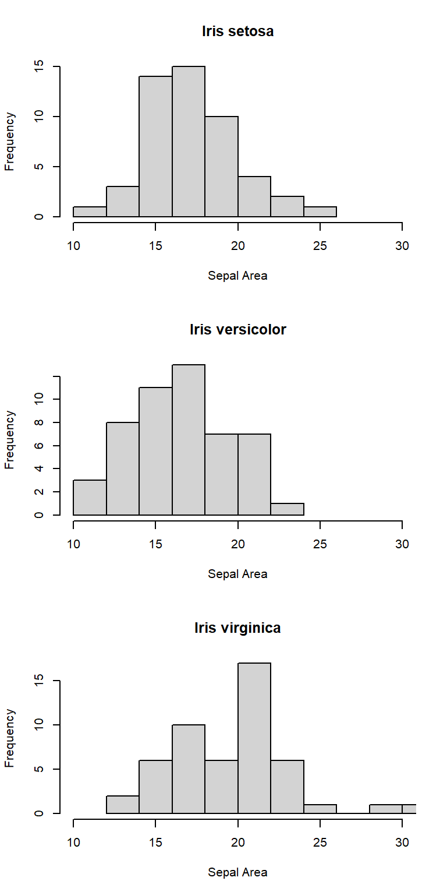
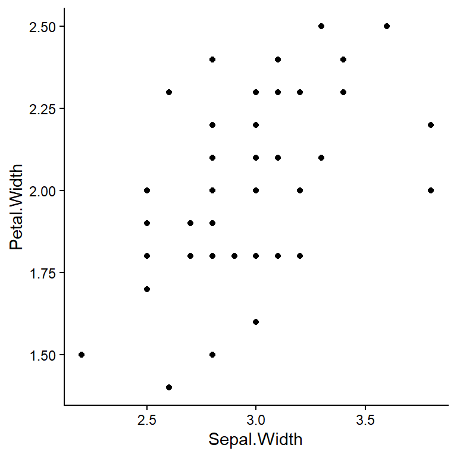
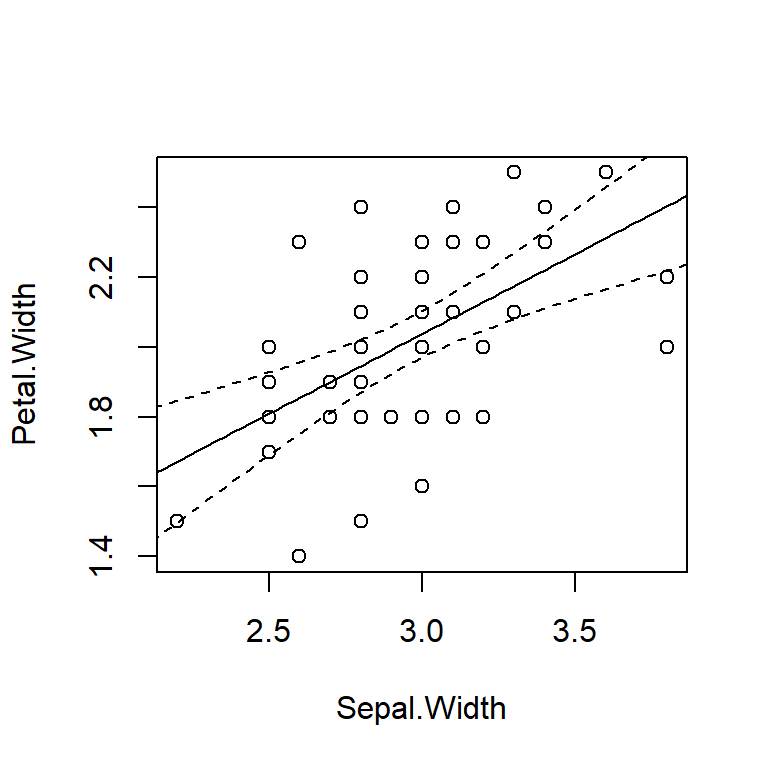

Extra: CA2
Overview
Coverage: L10-L20, P4-P6
This is a document to supplement the document for CA1. Keep in mind that CA2 covers all lectures and practicals. Please work through CA1_extra_R.qmd again as well.
Note that there are often many possible paths to the correct solution.
Air quality
The airquality dataset is available in R upon start-up, and gives daily values of mean ozone, solar radiation, mean wind speed, and max temperature at LaGuardia Airport in New York City (?airquality).
Assume we do not know the population parameters, but wish to estimate the probability of observing our sample mean under the hypothesis that \(\mu = 11 mph\). What is the T statistic?
Under this hypothesized \(\mu\), what is the probability of collecting a sample with a mean further from \(\mu\) than in this dataset?
Iris
The iris dataset is available in R upon start-up.
Research question: What is the difference in mean sepal area among Iris setosa, I. versicolor, and I. virginica?
What type of variables are the response and predictor variables?
Response: continuous
Predictor: categorical
What analysis is appropriate for this question?
ANOVA
For this question, is Species a fixed effect or a random effect?
Speciesis a fixed effect.
Calculate Sepal.Area
Create a new column in the data.frame iris called Sepal.Area.
View code
iris$Sepal.Area <- iris$Sepal.Length * iris$Sepal.Width
str(iris)'data.frame': 150 obs. of 6 variables:
$ Sepal.Length: num 5.1 4.9 4.7 4.6 5 5.4 4.6 5 4.4 4.9 ...
$ Sepal.Width : num 3.5 3 3.2 3.1 3.6 3.9 3.4 3.4 2.9 3.1 ...
$ Petal.Length: num 1.4 1.4 1.3 1.5 1.4 1.7 1.4 1.5 1.4 1.5 ...
$ Petal.Width : num 0.2 0.2 0.2 0.2 0.2 0.4 0.3 0.2 0.2 0.1 ...
$ Species : Factor w/ 3 levels "setosa","versicolor",..: 1 1 1 1 1 1 1 1 1 1 ...
$ Sepal.Area : num 17.8 14.7 15 14.3 18 ...Create a histogram of Sepal.Area, showing the distribution for each species using the same limits for the x-axis.
Option 1. ggplot:
View code
library(tidyverse)
# facet_grid() by default uses the same x-axis for all panels
ggplot(iris, aes(Sepal.Area)) +
geom_histogram(binwidth=2) +
facet_grid(Species~.)
Option 2. Base R:
View code
par(mfrow=c(3,1))
# Need to set xlim for each panel in base R
x_lims <- range(iris$Sepal.Area)
hist(iris$Sepal.Area[iris$Species=="setosa"],
main="Iris setosa", xlab="Sepal Area", xlim=x_lims)
hist(iris$Sepal.Area[iris$Species=="versicolor"],
main="Iris versicolor", xlab="Sepal Area", xlim=x_lims)
hist(iris$Sepal.Area[iris$Species=="virginica"],
main="Iris virginica", xlab="Sepal Area", xlim=x_lims)
Perform the analysis
Perform the analysis and assess the assumptions.
View code
SepalArea_aov <- aov(Sepal.Area ~ Species, data=iris) What assumptions of this ANOVA can you evaluate with these plots? Do they appear reasonable?
- Residual error is normally distributed.
- Standard deviation of residual error is identical across groups (= homoscedastic).
Yes, both assumptions are reasonable, though there are several individuals of Iris virginica that are rather large. This is not so extreme as to require a transformation.
What is the null hypothesis?
The population means for all species are the same. That is, the populations follow identical normal distributions.
What is the probability of the observed difference in group means if the null hypothesis were true?
View code
summary(SepalArea_aov) Df Sum Sq Mean Sq F value Pr(>F)
Species 2 273.3 136.7 14.24 2.22e-06 ***
Residuals 147 1410.7 9.6
---
Signif. codes: 0 '***' 0.001 '**' 0.01 '*' 0.05 '.' 0.1 ' ' 12.22 x 10^-6 = 0.00000222
Follow up analysis
What are the means and 95% confidence intervals for each species?
What is the best interpretation of these 95% confidence intervals?
The population mean (mu) is captured by 95% CIs in 95% of random samples of the population. The population mean is a fixed value, so the 95% CIs from this specific sample either capture mu or they do not, and we do not know which.
What are the effect sizes and 95% confidence intervals? That is, which species are meaningfully different from one another and how confident are we in those differences?
View code
TukeyHSD(SepalArea_aov) Tukey multiple comparisons of means
95% family-wise confidence level
Fit: aov(formula = Sepal.Area ~ Species, data = iris)
$Species
diff lwr upr p adj
versicolor-setosa -0.7316 -2.1985315 0.7353315 0.4664726
virginica-setosa 2.4268 0.9598685 3.8937315 0.0004006
virginica-versicolor 3.1584 1.6914685 4.6253315 0.0000031I. virginica is 2.43 greater than I. setosa (95% CI: 0.960 - 3.89; p < 0.001).
I. virginica is 3.16 greater than I. versicolor (95% CI: 1.69 - 4.63; p < 0.001).
There is no support for a difference between I. versicolor and I. setosa (p = 0.466).
Iris (reprise)
Research question: For the species I. virginica, what is the effect of sepal width on petal width?
What type of variables are the response and predictor variables?
Response: continuous
Predictor: continuous
What analysis is appropriate for this question?
Linear regression
Create the appropriate data.frame
Create a new dataframe containing all columns in iris, but only rows where the species is virginica.
View code
virginica_df <- iris[iris$Species=="virginica",]Create a scatterplot of the relationship, with the predictor variable on the x-axis and the response variable on the y-axis.
Option 1. ggplot:
View code
ggplot(virginica_df, aes(Sepal.Width, Petal.Width)) +
geom_point()
Option 2. Base R:
Perform the analysis
Perform the analysis and check the assumptions.
What assumptions of this linear regression can you evaluate with these plots? Do they appear reasonable?
- Residual error is normally distributed.
- Standard deviation of residual error is constant across values of the predictor (= homoscedastic).
Yes, both assumptions are reasonable, though there’s a hint of a possible increase in standard deviation at high fitted values (3rd plot, sqrt(abs(standardized residuals))). However, there are only two observations at the far end, so that is very plausibly due to random chance.
What is the null hypothesis?
There is no effect of sepal width on petal width in the population.
What would the null hypothesis look like on the scatter plot above?
What is the probability of the observed change in petal width per unit increase in sepal width if the null hypothesis were true?
View code
summary(width_lm)
Call:
lm(formula = Petal.Width ~ Sepal.Width, data = virginica_df)
Residuals:
Min 1Q Median 3Q Max
-0.45473 -0.18697 0.00789 0.17050 0.45368
Coefficients:
Estimate Std. Error t value Pr(>|t|)
(Intercept) 0.6641 0.3100 2.142 0.0373 *
Sepal.Width 0.4579 0.1036 4.419 5.65e-05 ***
---
Signif. codes: 0 '***' 0.001 '**' 0.01 '*' 0.05 '.' 0.1 ' ' 1
Residual standard error: 0.234 on 48 degrees of freedom
Multiple R-squared: 0.2892, Adjusted R-squared: 0.2743
F-statistic: 19.52 on 1 and 48 DF, p-value: 5.648e-055.65 x 10^-5 = 0.0000565
Follow up analysis
To three significant figures, what is the best estimate of the change in petal width per unit increase in sepal width, and what are the 95% confidence intervals?
Create a scatter plot of the relationship and add the best fit line from the linear regression with 95% confidence intervals.
View code
# Create a sequence of Sepal.Width values to generate predictions for
sepW_seq <- seq(min(virginica_df$Sepal.Width)*0.8,
max(virginica_df$Sepal.Width)*1.2,
length.out=100)
# Generate predictions (fit & 95% CIs)
width_preds <- predict(width_lm, interval="confidence", level=0.95,
newdata=data.frame(Sepal.Width=sepW_seq))
# Plot
par(mfrow=c(1,1))
plot(Petal.Width ~ Sepal.Width, data=virginica_df)
lines(sepW_seq, width_preds[, "fit"])
lines(sepW_seq, width_preds[, "lwr"], lty=2)
lines(sepW_seq, width_preds[, "upr"], lty=2)
NMDS, PCA
You will not be asked to produce any R code relating to Practical 6, so I am not including extra R practice here. You should nevertheless be familiar with the concepts, confident in the steps involved, and comfortable interpreting the output.